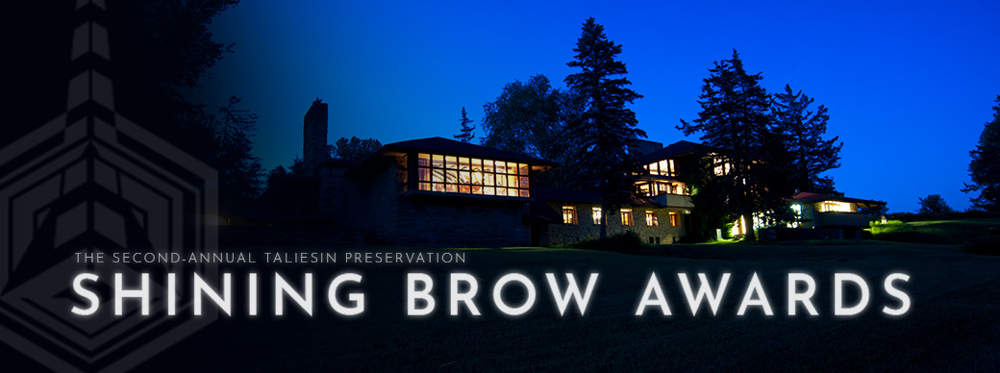
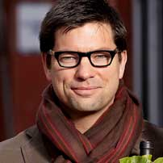

Celebrating the Radiant Spirit of Frank Lloyd Wright's Legacy

Photograph by Nathan Rist, Taliesin 2015
Featuring the musical talent of famed-drummer Max Weinberg and his 4-piece band live in the Hillside Drafting Studio. Weinberg invites the audience to create the set list, in real time, performing songs from the glory days of rock and roll. A dinner will be prepared by celebrated Chef Luke Zahm of the Driftless Café and the culinary food artisan team of our Riverview Terrace Café featuring Taliesin-grown organic produce. Kyle Cherek, host of the Emmy Award-winning “Wisconsin Foodie” series will emcee.
 Max Weinberg
Max Weinberg Luke Zahm
Luke ZahmKyle Cherek
Reception - 6 PM
Dinner - 7 PM
Music & Dancing - 8:30 PM
Evening Attire
Taliesin Renewal Gala, 2017